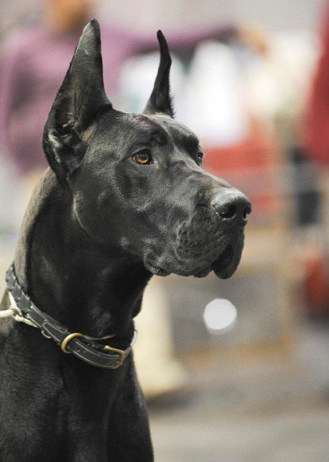
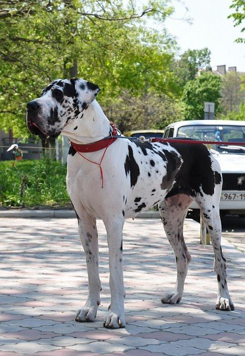

Немецкий дог – настоящий аристократ собачьего мира. Он покоряет сердца величественной красотой, интеллектом, ласковым отношением к домочадцам и прекрасными охранными качествами.
Немецкий дог при первом знакомстве кажется грозной и даже опасной собакой, благодаря своим выдающимся физическим данным. Однако за внешностью сурового гиганта на самом деле скрывается спокойный и невероятно преданный семье добряк. Он не склонен к агрессии, если только действия постороннего не провоцируют пса защищать жизнь хозяев или его собственную.
Немецкий дог относится к гигантским породам. Половой диморфизм ярко выражен. Рост кобеля в холке не должен быть ниже 80 см, суки – 72 см. Нормальный вес взрослой особи (старше 18 месяцев) стартует от 54 и 45 кг соответственно. Самцы выглядят массивнее за счет размеров скелета и более «тяжелых» костей.
Собака производит впечатление мощного, но пропорционально сложенного и даже элегантного животного. Кобели имеют выраженный квадратный формат, суки могут быть чуть более вытянутыми.
Длинная, узкая, с выраженными, но не выступающими надбровными дугами. Стоп хорошо выделяется и находится примерно посередине между кончиком носа и затылочной частью. Верхняя линия морды и черепа параллельны.
Хорошо развитый, скорее широкий, чем круглый. Ноздри большие. Цвет мочки черный (только при мраморном окрасе допускается частичная пигментация).
Широкие, хорошо развитые.
Сильные, здоровые. Прикус ножницеобразный, полный.
С хорошо определенными углами, темные. У мраморных немецких догов допускается неполная пигментация.
Округлой формы, среднего размера, с плотно прилегающими веками. Максимально темные, хотя более светлые допустимы у голубых и мраморных собак.
Уши немецкого дога высоко посаженные, треугольные. В естественном состоянии висячие, передняя часть прилегает к щекам. Купирование было необходимо при использовании на охоте, сегодня не является обязательным и носит косметический характер.
Длинная, мускулистая. Вертикальная с легким уклоном вперед. Обеспечивает плавный переход от верхней точки корпуса к голове.
Корпус у дога мощный. Грудь широкая, с хорошо развитой грудной клеткой и подвижными ребрами. Живот подтянут. Спина короткая и упругая. Поясница широкая, слегка изогнутая. Круп широкий и мускулистый, имеет небольшой наклон от крестца к основанию хвоста.
Хвост немецкого дога посажен высоко. Постепенно сужается от широкого основания к кончику. В состоянии покоя свободно свисает вниз. В возбужденном состоянии не должен подниматься существенно выше уровня спины.
Сильные, мускулистые. При фронтальном осмотре полностью прямые, задние параллельны передним. Передние с длинной наклонной лопаткой формируют плечи с хорошо развитой мускулатурой. Задние сильные, с хорошими углами.
Округлые, сводчатые. Ногти короткие и максимально темные.
Очень короткая и плотная, блестящая и гладкая.
У немецких догов признаны палевый (от бледно-золотого до глубокого золотого с черной маской), тигровый (палевый фон с черными полосами, параллельными ребрам), мраморный (белый с неравномерными рваными черными пятнами), черный и голубой окрасы.
От любого владельца немецкого дога вы услышите массу комплиментов в адрес породы. Эти великаны от природы очень интеллигентны и доброжелательны. Конечно, щенок любит активные игры и склонен к озорству, что при его габаритах может быть разрушительно. Но они не зловредны и не делают гадостей ради удовольствия, а если во время борьбы за палку вы окажетесь на земле, не стоит считать подобный поступок проявлением враждебности – зачастую «малыш» в период активного роста просто не осознает своих габаритов и как следствие не соизмеряет силу, которую прикладывает, чтобы победить в единоборстве.
С возрастом это проходит, взрослый пес становится степенным и надежным компаньоном. Остро выраженный инстинкт защитника и опекуна слабых членов «стаи» превращает немецкого дога не просто в охранника – с такой няней ваш ребенок будет в полной безопасности, собака никогда не даст его в обиду.
Пусть не вводит в заблуждение внешнее спокойствие и безразличный взгляд, которым дог окидывает окружающих. Он постоянно «мониторит» ситуацию и контролирует обстановку, чтобы при необходимости показать тому, кто посягнет на жизнь или имущество домочадцев, кто здесь главный. При этом немотивированной агрессии по отношению к случайным прохожим и соседям обычно не проявляет, исключением являются животные с нестабильной психикой, нарушенной в результате жестокого обращения или неправильного воспитания.
Общительный и жизнерадостный питомец больше всего любит проводить время с семьей. Длительные отлучки хозяев психологически переносит не слишком хорошо, поэтому, если ваша работа связана с частыми командировками, советуем подумать о щенке другой породы.